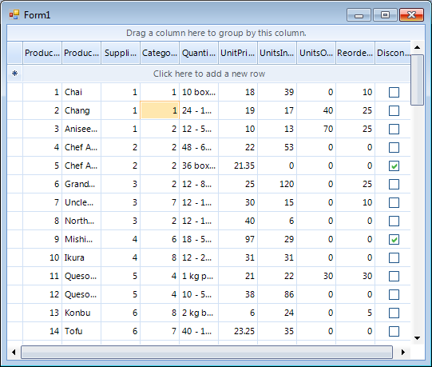

Selecting Rows and Cells Programmatically
Selecting a single row
You can select a single row programmatically
by setting its IsSelected property to true:
[C#]
radGridView1.Rows[2].IsSelected = true;
[VB.NET]
RadGridView1.Rows(2).IsSelected = True
You can also select a single row by making it current:
[C#]
radGridView1.Rows[2].IsCurrent = true;
[VB.NET]
RadGridView1.Rows(2).IsCurrent = True
Both ways of selecting a single row will result in adding
this row into the RadGridView.SelectedRows collection

Selecting multiple rows
You can select multiple rows programmatically
by setting their IsSelected property to true:
[C#]
radGridView1.ClearSelection();
radGridView1.MultiSelect = true;
radGridView1.SelectionMode = Telerik.WinControls.UI.GridViewSelectionMode.FullRowSelect;
radGridView1.Rows[0].IsSelected = true;
radGridView1.Rows[4].IsSelected = true;
radGridView1.Rows[6].IsSelected = true;
radGridView1.Rows[9].IsSelected = true;
[VB.NET]
RadGridView1.ClearSelection()
RadGridView1.MultiSelect = True
RadGridView1.SelectionMode = Telerik.WinControls.UI.GridViewSelectionMode.FullRowSelect
RadGridView1.Rows(0).IsSelected = True
RadGridView1.Rows(4).IsSelected = True
RadGridView1.Rows(6).IsSelected = True
RadGridView1.Rows(9).IsSelected = True

In this scenario all four rows are added to the SelectedRows collection of RadGridView. You can access the instances
of the selected rows in the SelectedRows collection by index:
[C#]
GridViewRowInfo selectedRow = radGridView1.SelectedRows[0];
[VB.NET]
Dim selectedRow As GridViewRowInfo = RadGridView1.SelectedRows(0)
Note that the rows are added to the SelectedRows collection in the same
order as the order in which you have set the selected rows.
Selecting a single cell
You can select cells that same way you select rows –
by setting their IsSelected property to true:
[C#]
radGridView1.ClearSelection();
radGridView1.SelectionMode = Telerik.WinControls.UI.GridViewSelectionMode.CellSelect;
//here instead of a cell index you can specify the Name of the column as a string
//i.e. radGridView1.Rows[1].Cells[“Column 1”].IsSelected = true;
radGridView1.Rows[1].Cells[3].IsSelected = true;
[VB.NET]
RadGridView1.ClearSelection()
RadGridView1.SelectionMode = Telerik.WinControls.UI.GridViewSelectionMode.CellSelect
'here instead of a cell index you can specify the Name of the column as a string
'i.e. radGridView1.Rows(1).Cells(“Column 1”).IsSelected = true
RadGridView1.Rows(1).Cells(3).IsSelected = True
Selecting a single cell will result in adding this
cell into the RadGridView.SelectedCells collection.

Selecting multiple cells
Selecting multiple cells programmatically is achieved by setting the
IsSelected property of the desired cells to true.
[C#]
radGridView1.MultiSelect = true;
radGridView1.SelectionMode = Telerik.WinControls.UI.GridViewSelectionMode.CellSelect;
radGridView1.Rows[0].Cells[0].IsSelected = true;
radGridView1.Rows[3].Cells[4].IsSelected = true;
radGridView1.Rows[5].Cells[6].IsSelected = true;
radGridView1.Rows[6].Cells[8].IsSelected = true;
[VB.NET]
RadGridView1.MultiSelect = True
RadGridView1.SelectionMode = Telerik.WinControls.UI.GridViewSelectionMode.CellSelect
RadGridView1.Rows(0).Cells(0).IsSelected = True
RadGridView1.Rows(3).Cells(4).IsSelected = True
RadGridView1.Rows(5).Cells(6).IsSelected = True
RadGridView1.Rows(6).Cells(8).IsSelected = True

In this scenario all four cells will be added to the SelectedCells collection of RadGridView. You can access the instances
of the selected cells in the SelectedCells collection by index:
[C#]
GridViewCellInfo selectedCell = radGridView1.SelectedCells[0];
[VB.NET]
Dim selectedCell As GridViewCellInfo = RadGridView1.SelectedCells(0)
Note that the cells are added to the collection in the same
order as the order in which you have set the selected cells.